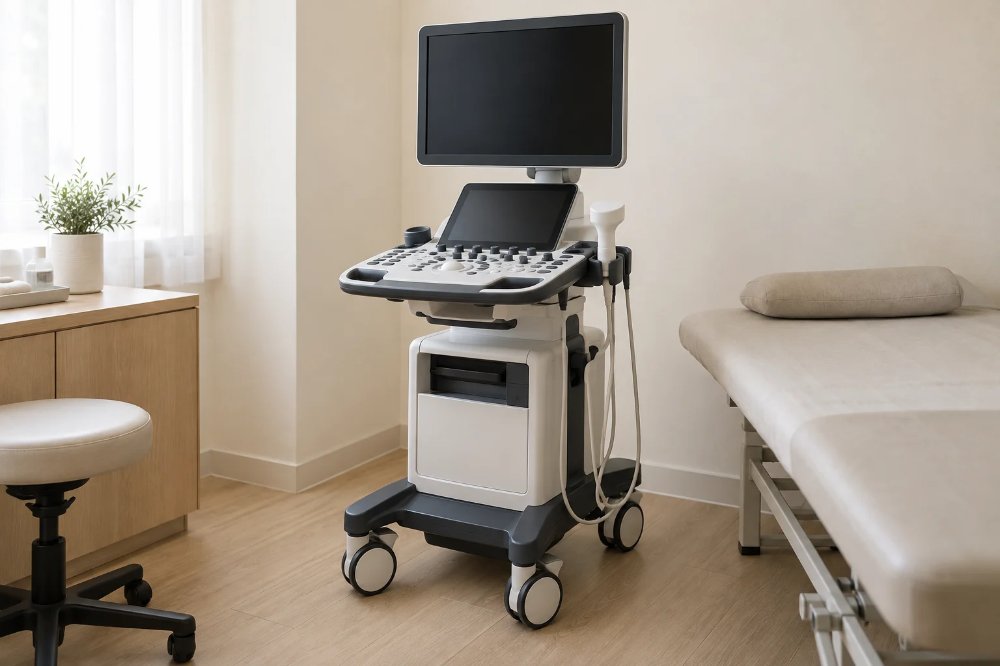
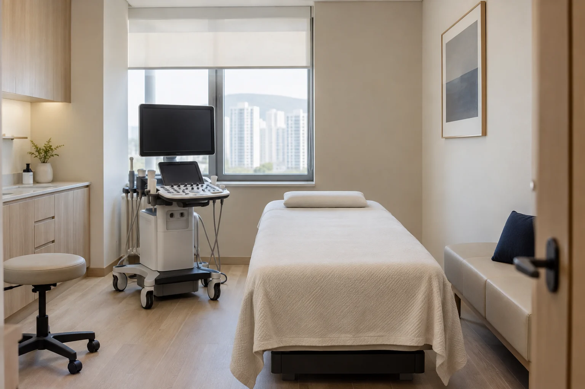

YEOUIDO GITONGCHAN
근골격계 진단에 특화된 첨단 초음파
삼성 메디슨 V5

삼성 메디슨 HS50

YEOUIDO GITONGCHAN
주요 기능과 장점

근육·힘줄·신경·관절과 주변 조직 확인
삼성 메디슨 V5와 HS50을 활용해 근육, 힘줄, 신경, 관절 및
주변 조직의 상태를 선명하게 확인할 수 있어
척추·관절 질환의 조기 진단과 정확한 평가를 가능하게 합니다.
빠르고 직관적인 검사 환경
짧은 시간 안에 정확한 영상을 얻어
확인한 조직의 상태와 진찰 결과를 함께 살펴
진단과 정밀한 주사치료에 활용합니다.
환자에게 안전한 무방사선 검사
방사선 노출이 전혀 없어 임산부와 노약자도 안심할 수 있으며,
반복 검사에도 부담이 적어 환자 친화적입니다.
모든 연령대 환자에게 적합한 보편적 검사 솔루션입니다.